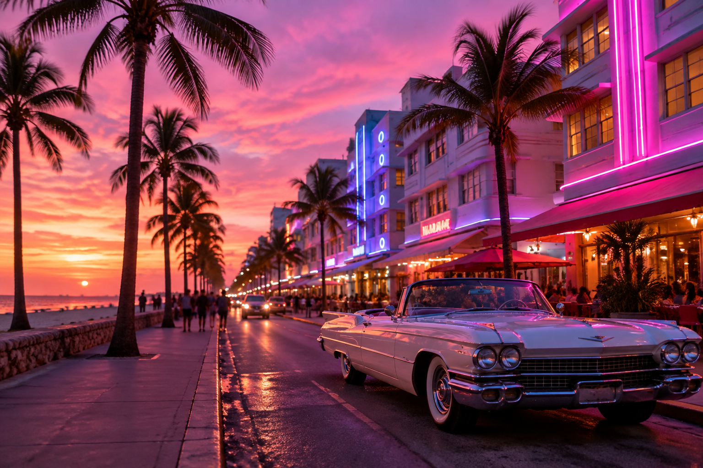
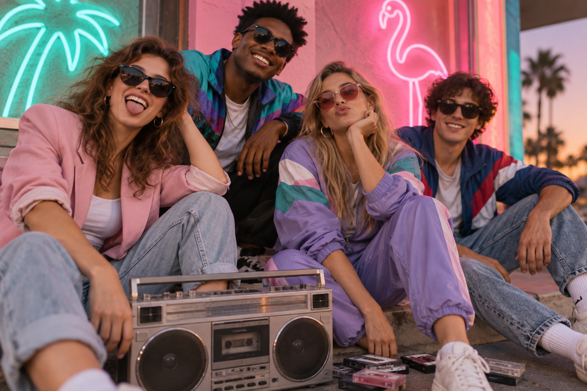
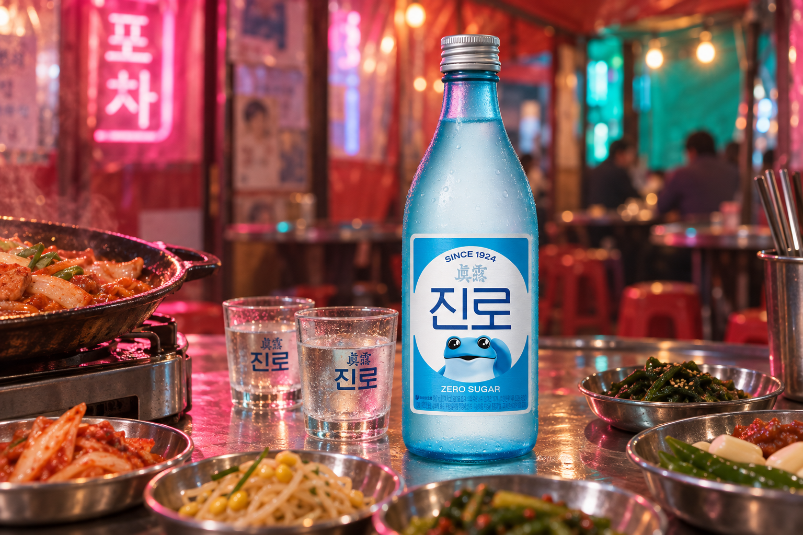
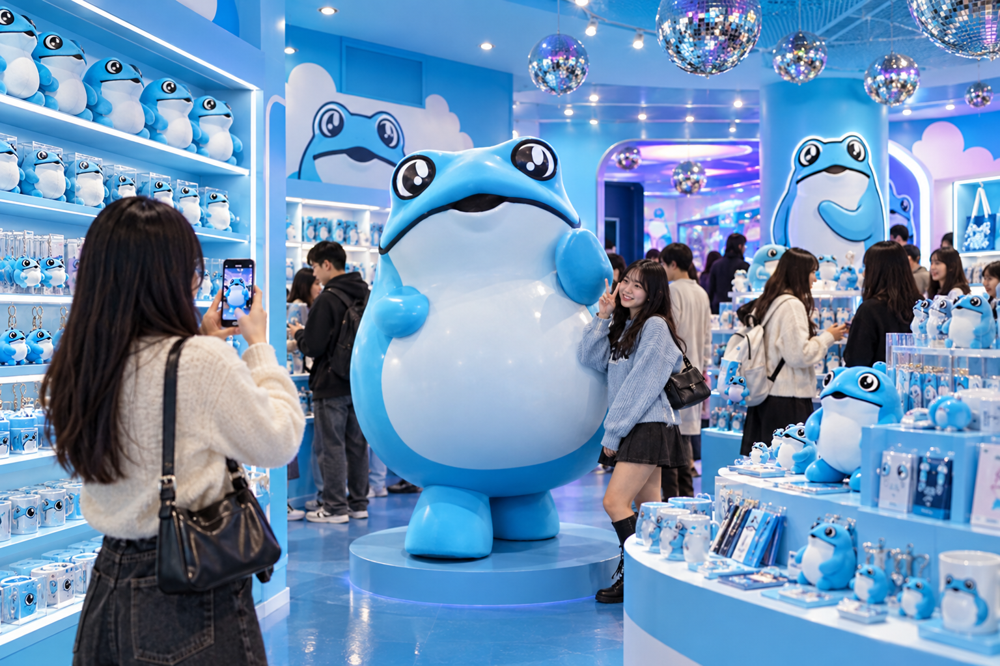
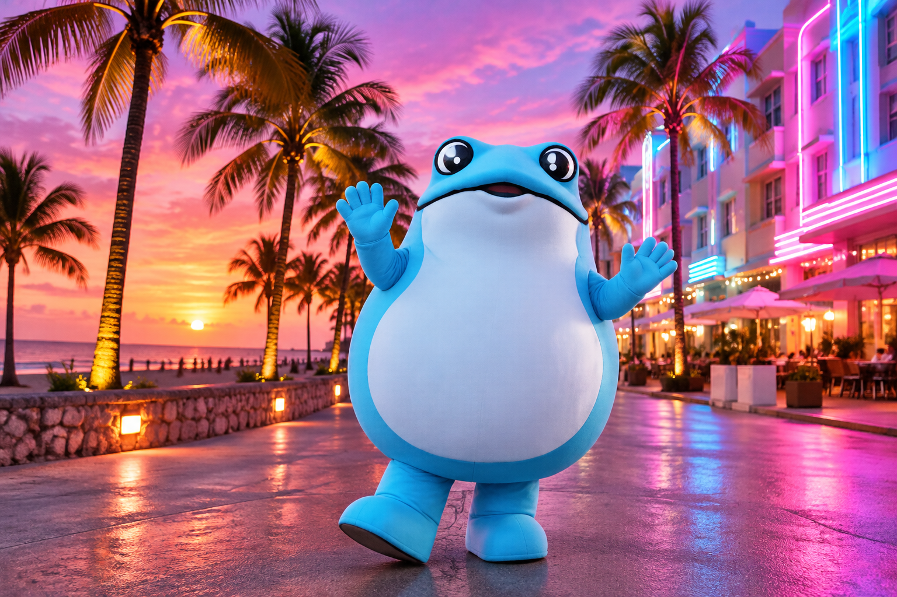

GTA 6’s Vice City, the Retro Revival and the Return of JINRO Toad
GTA 6 lands on November 19, and its Vice City still looks like the ’80s. Here is why retro keeps coming back, and what JINRO Toad has to do with it.
On November 19, Vice City returns with the launch of GTA 6.
This time, Vice City is a city of today, not the 1980s. There are smartphones and social media in the picture, yet the scenery in the trailers still reads as pure ’80s retro.
The era has changed, but the retro feel has stayed.

1. Why Does GTA 6’s Vice City Still Look Like the ’80s?
The original GTA: Vice City came out in 2002. It was set in 1986 and recreated the Miami of the ’80s.
GTA 6 moves the story to the present-day state of Leonida. Still, the Vice City look carries straight through: pink and purple sunsets, neon signs, Art Deco buildings and palm tree silhouettes.
In other words, retro is no longer just a backdrop for a certain period. It has become the visual language that makes the city instantly recognizable.
Today’s retro style works the same way. Instead of copying the past as a whole, it keeps a few signature details and remixes the rest for today.

2. JINRO Is Back: How a Classic Bottle Brought Toad Back
In Korea, one brand won over a new generation by bringing back its classic look: JINRO. In April 2019, JINRO relaunched its classic soju as JINRO Is Back.
It kept the symbols people remembered: the sky-blue bottle, the classic label design and the toad that has long represented JINRO.
But it updated the look. The realistic toad from the old label became a round, friendly blue character, now known as JINRO Toad.
Fans responded quickly. JINRO Is Back sold 100 million bottles within seven months of its launch.

3. The Toad Shop: JINRO Toad Steps Off the Label
JINRO Toad did not stay on the bottle for long. Fans kept asking where they could buy the toad goods that had only been made for promotions.
So in August 2020, JINRO opened Dukkeop Sanghoe, or the Toad Shop, in Seoul’s Seongsu-dong. It was Korea’s first character store from a liquor brand, and it sold goods instead of drinks, like a stationery shop for grown-ups.
The shop later popped up in cities across Korea with local editions, like a toad in a hanbok in Jeonju. Collaborations followed too, from fashion pieces to toad-themed desserts and snacks at Korean convenience stores.
Today, one look at a blue toad is enough to bring JINRO to mind.

4. Why Classics Keep Coming Back
A city in a video game and a character on a soju bottle could not be more different. But the way they stay loved is surprisingly similar.
Neither one simply repeats the past. Both keep the symbols people recognize, then present them in a way that feels current.
That is why JINRO Toad keeps showing up with a new look, and why a new generation keeps falling for it.

Which retro classic would you bring back next?
To discover more Korean food stories and JINRO pairings, visit JINRO Global’s official Instagram, Facebook, and YouTube.
This article is intended for readers of legal drinking age. Please enjoy JINRO responsibly and in moderation, and never drink and drive.